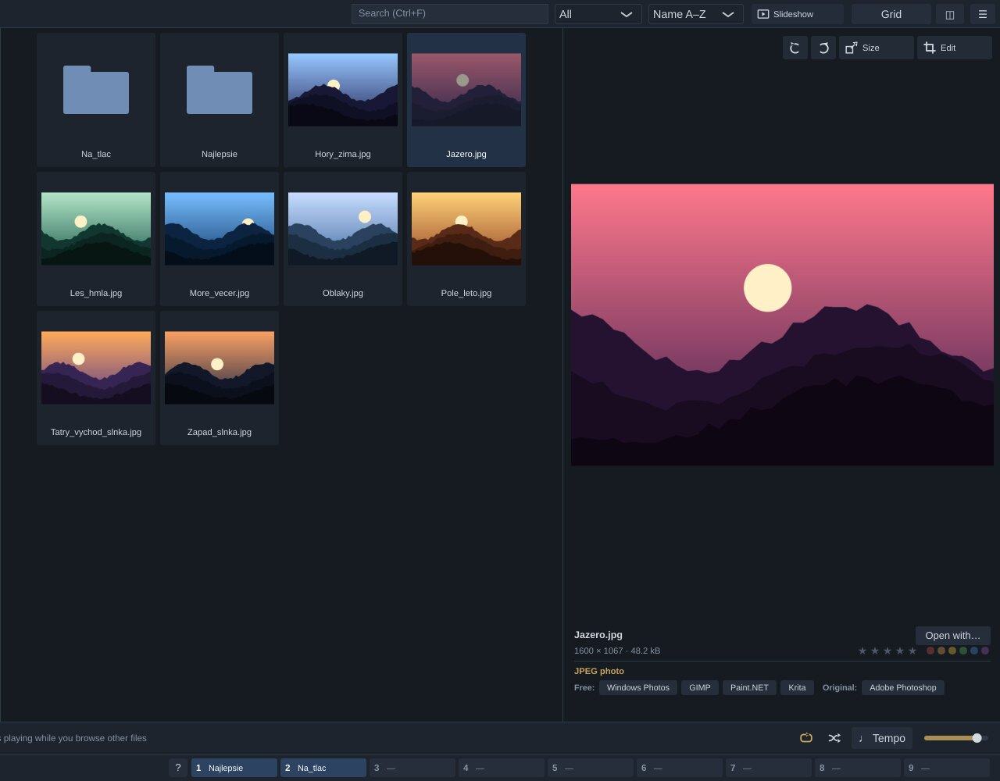

Inštalácia a aktualizácieInstallation and updates
InštaláciaInstalling
- Stiahni si KorgusPlayer-Setup.exe zo stránky cami.sk/korgusplayer.Download KorgusPlayer-Setup.exe from cami.sk/korgusplayer.
- Spusti ho. Inštalácia nepotrebuje administrátora – program sa nainštaluje len pre teba do priečinka AppData\Local\Programs\Korgus Player.Run it. No admin rights are needed – the program installs just for you into AppData\Local\Programs\Korgus Player.
- Ak chceš, nechaj vytvoriť ikonu na ploche. Program nájdeš aj v ponuke Štart.Optionally create a desktop icon. The program is also in the Start menu.
Ak sa Windows SmartScreen spýta, či program spustiť, klikni na Ďalšie informácie → Spustiť aj tak. Program je nový a ešte nemá „reputáciu“.If Windows SmartScreen asks whether to run it, click More info → Run anyway. The program is new and has no “reputation” yet.
Bez inštalácieWithout installing
Môžeš si stiahnuť aj samostatný súbor Korgus Player.exe a spustiť ho odkiaľkoľvek (aj z USB kľúča). Na prehrávanie videa vtedy program potrebuje knižnicu libmpv-2.dll – stiahneš ju jedným klikom cez ☰ → Stiahnuť prehrávač videa.You can also download the standalone Korgus Player.exe and run it from anywhere (even a USB stick). For video playback it then needs the libmpv-2.dll library – download it with one click via ☰ → Download video player.
AktualizácieUpdates
Pri spustení program potichu zistí, či je nová verzia. Ak áno, ponúkne Aktualizovať, Neskôr alebo Preskočiť túto verziu. Po kliknutí na Aktualizovať sa nová verzia stiahne, nahradí starú a program sa sám znova spustí. Ručne: ☰ → Skontrolovať aktualizácie. Automatickú kontrolu vypneš v tom istom menu.At start-up the program quietly checks for a new version and offers Update, Later or Skip this version. Update downloads the new version, replaces the old one and restarts. Manually: ☰ → Check for updates. Turn automatic checks off in the same menu.
OdinštalovanieUninstalling
Cez Nastavenia Windows → Aplikácie ako každý iný program. Tvoje súbory sa nezmenia.Via Windows Settings → Apps like any other program. Your files are not touched.
Okno programuThe main window


- Horná lišta – úplne vľavo ikona na kopírovanie cesty, šípka ↑ o priečinok vyššie a cesta k priečinku. Nad zoznamom súborov Filter (Všetko, Obrázky, Zvuk…), Triedenie (aj stĺpce zoznamu), prepínač Mriežka / Zoznam a pole Hľadať. Úplne vpravo Prezentácia, Dva panely a Nastavenia (ozubené koliesko). Pri každej ikone sa po prejdení myšou ukáže, čo robí.Top bar – on the far left an icon to copy the path, ↑ up one folder and the folder path. Above the file list Filter (All, Pictures, Audio…), Sorting (incl. list columns), the Grid / List switch and Search. On the far right Slideshow, Two panels and Settings (gear). Hover over an icon to see what it does.
- Strom priečinkov vľavo – Plocha, Dokumenty, Obrázky, Hudba, Videá, Stiahnuté, disky a tvoje obľúbené priečinky.Folder tree on the left – Desktop, Documents, Pictures, Music, Videos, Downloads, drives and your favourite folders.
- Karty nad súbormi – viac priečinkov otvorených naraz.Tabs above the files – several folders open at once.
- Stred – súbory ako mriežka náhľadov alebo zoznam (pri zvukoch s vlnou, dĺžkou, BPM a tóninou). Veľkosť náhľadov mení posuvník v lište pod súbormi alebo Ctrl + koliesko, šírku stĺpcov zoznamu ťahanie okraja v nadpise.Centre – files as a thumbnail grid or a list (for audio with waveform, length, BPM and key). Thumbnail size: the slider in the bar below the files or Ctrl + wheel; list column widths: drag the edge in the header.
- Náhľad vpravo – obrázok, vlna zvuku, video, PDF, text, 3D model… Pod ním údaje o súbore, hodnotenie, farebný štítok a čím sa dá súbor otvoriť.Preview on the right – image, waveform, video, PDF, text, 3D model… Below it file details, rating, colour label and which programs open the file.
- Prehrávač – ⏮ ▶ ⏹ ⏭, priebeh skladby, opakovanie, náhodné poradie, ♩ tempo a hlasitosť.Player – ⏮ ▶ ⏹ ⏭, progress, repeat, shuffle, ♩ tempo and volume.
- Spodná lišta – správy programu, tlačidlo ? a cieľové priečinky 1–9 na triedenie.Bottom bar – program messages, the ? button and target folders 1–9 for sorting.
Šírku stromu a náhľadu zmeníš ťahaním deliacich čiar.Drag the divider lines to change the width of the tree and the preview.
Prechádzanie a hľadanieBrowsing and searching
| ← → ↑ ↓ | pohyb po súborochmove between files |
| Enter | otvoriť priečinok, obrázok na celú obrazovku, video na celú obrazovkuopen a folder, image full screen, video full screen |
| Backspace / Alt + ↑ | o priečinok vyššieup one folder |
| Home / End | prvý / posledný súborfirst / last file |
| V | mriežka / zoznamgrid / list |
| Ctrl + A | označiť všetkomark all |
| Ctrl / Shift + klikclick | označiť viac súborovmark several files |
| Esc | zrušiť označenieclear marks |
Priečinky so zvukmi sa samy otvoria ako zoznam, priečinky s fotkami ako mriežka.Folders with audio open as a list automatically, folders with photos as a grid.
HľadanieSearch
- Píš do poľa Hľadať (Ctrl + F) – zoznam sa hneď filtruje v aktuálnom priečinku. Na diakritike ani veľkých písmenách nezáleží, viac slov = musia sedieť všetky.Type into Search (Ctrl + F) – the current folder filters instantly. Accents and case don't matter; several words must all match.
- Stlač Enter a program prehľadá aj všetky podpriečinky (napr. „kick 124“ v celej knižnici samplov). Výsledky môžeš prehrávať, triediť aj presúvať. Esc alebo Backspace ťa vráti do priečinka.Press Enter to search all subfolders too (e.g. “kick 124” across your whole sample library). Results can be played, sorted and moved. Esc or Backspace returns to the folder.
- Filter typu vedľa hľadania zobrazí len obrázky, zvuky, videá, dokumenty, 3D a CAD, priečinky, súbory s hodnotením alebo so štítkom.The type filter next to search shows only images, audio, video, documents, 3D and CAD, folders, rated or labelled files.
TriedenieSorting
Názov A–Z / Z–A, najnovšie, najstaršie, dátum fotenia (z fotoaparátu), najväčšie, typ súboru. V zozname klikni na nadpis stĺpca.Name A–Z / Z–A, newest, oldest, date taken (from the camera), largest, file type. In the list, click a column header.
Obľúbené priečinky a kartyFavourite folders and tabs
- Pravý klik na priečinok v strome → Pridať do obľúbených ★. Obľúbené sú hore v strome.Right-click a folder in the tree → Add to favourites ★. Favourites are at the top of the tree.
- Ctrl + T alebo + otvorí novú kartu, Ctrl + W alebo × ju zavrie, Ctrl + Tab prepína. Stredné tlačidlo myši na karte ju tiež zavrie. Karty si program pamätá.Ctrl + T or + opens a new tab, Ctrl + W or × closes it, Ctrl + Tab switches. Middle-clicking a tab closes it too. Tabs are remembered.
Obrázky a fotkyImages and photos
Podporované: JPG, PNG, GIF, WebP, BMP, TIFF, HEIC (s rozšírením z Microsoft Store), AVIF, RAW z fotoaparátov, PSD (náhľad), SVG, EPS/AI (vložený náhľad), ICO, EMF/WMF.Supported: JPG, PNG, GIF, WebP, BMP, TIFF, HEIC (with the Microsoft Store extension), AVIF, camera RAW, PSD (preview), SVG, EPS/AI (embedded preview), ICO, EMF/WMF.
Na celú obrazovkuFull screen
| Enter / F11 | otvoriť / zavrieťopen / close |
| ← → | predošlá / ďalšia fotkaprevious / next photo |
| koliesko myšimouse wheel, + − | priblížiť / oddialiť (ťahaním posúvaš)zoom in / out (drag to pan) |
| 0 | celý obrázokfit to screen |
| F | veľkosť: celý / vyplniť obrazovku / pôvodnásize: fit / fill screen / original |
| 1…9 | presunúť fotku do cieľového priečinkamove the photo to a target folder |
PrezentáciaSlideshow
Tlačidlo Prezentácia alebo F5 na celej obrazovke. Interval nastavíš šípkami ◀ ▶ (alebo ↑ ↓, + −), náhodné poradie a hudbu pod prezentáciu tlačidlom Hudba (vyberieš priečinok s hudbou).The Slideshow button or F5 in full screen. Set the interval with ◀ ▶ (or ↑ ↓, + −), shuffle, and music with the Music button (pick a music folder).
ÚpravyEditing
- Otočiť – R doprava, L doľava (aj tlačidlami nad náhľadom). JPG sa otáča bez straty kvality.Rotate – R right, L left (also with the buttons above the preview). JPG rotates losslessly.
- Zmeniť veľkosť – Ctrl + R. Označ viac fotiek a zmenši ich naraz: kópia vedľa originálu, do podpriečinka „zmensene“, do vybraného priečinka, alebo prepísať.Resize – Ctrl + R. Mark several photos and resize them at once: copy next to the original, into a “zmensene” subfolder, into a chosen folder, or overwrite.
- Upraviť – E: orezanie (voľné alebo 1:1, 4:3, 16:9…), jas, kontrast, sýtosť. Ulož ako kópiu alebo prepíš originál.Edit – E: crop (free or 1:1, 4:3, 16:9…), brightness, contrast, saturation. Save as a copy or overwrite.
Porovnanie a podobné fotkyCompare and similar photos
- C – dve fotky vedľa seba so spoločným priblížením. ← → mení pravú fotku, 1 nechá ľavú, 2 pravú (druhá sa označí na zmazanie alebo presun).C – two photos side by side with shared zoom. ← → changes the right photo, 1 keeps the left, 2 the right (the other gets marked for deleting or moving).
- Pravý klik → Nájsť podobné fotky – program zoskupí série skoro rovnakých záberov. V každej sérii nechá jednu a ostatné označí – stačí Del.Right-click → Find similar photos – groups series of near-identical shots, keeps one per series and marks the rest – just press Del.
- Pravý klik → Nájsť duplikáty v priečinku – úplne rovnaké súbory (aj s iným menom).Right-click → Find duplicates in folder – identical files (even with different names).
Údaje z fotoaparátu a mapaCamera data and map
Pod náhľadom fotky vidíš fotoaparát, objektív, expozíciu a dátum fotenia. Ak má fotka GPS, tlačidlo Ukázať na mape otvorí miesto na mape.Below the photo preview you see the camera, lens, exposure and date taken. If the photo has GPS, Show on map opens the location.
Import z karty a fotoaparátuImporting from a card or camera
Keď pripojíš kartu alebo fotoaparát (priečinok DCIM), program to oznámi. ☰ → Importovať fotky: vyber odkiaľ, kam a ako pomenovať priečinky (napr. 2026\2026-11-18 Dovolenka). Fotky a videá sa skopírujú podľa dátumu fotenia, na karte ostanú a pri ďalšom importe sa už skopírované preskočia. Z telefónu: vyber jeho priečinok DCIM cez „Vybrať priečinok“.When you connect a card or camera (a DCIM folder), the program tells you. ☰ → Import photos: pick the source, the target and how folders are named (e.g. 2026\2026-11-18 Holiday). Photos and videos are copied by date taken, stay on the card, and files already imported are skipped next time. From a phone: choose its DCIM folder via “Choose a folder”.
Video z fotiekVideo from photos
Pravý klik → Vytvoriť video z fotiek. Vyber dĺžku jednej fotky a hudbu. Vznikne MP4 1920×1080 s pomalým približovaním a prelínaním – hotové na poslanie alebo na Facebook. Použijú sa označené fotky, inak všetky v priečinku.Right-click → Create a video from photos. Choose the time per photo and music. You get a 1920×1080 MP4 with slow zoom and crossfades – ready to share. Marked photos are used, otherwise all photos in the folder.
Hudba a samplyMusic and samples


Podporované: MP3, WAV, W64, FLAC, AIFF/AIFC, OGG, Opus, M4A/AAC, WMA, REX (.rx2/.rex/.rcy) a MIDI.Supported: MP3, WAV, W64, FLAC, AIFF/AIFC, OGG, Opus, M4A/AAC, WMA, REX (.rx2/.rex/.rcy) and MIDI.
- Klik na zvuk ho prehrá. Hudba hrá ďalej, aj keď prezeráš iné súbory. Medzerník = prehrať / pauza, klik do vlny = skok.Clicking a sound plays it. Music keeps playing while you browse other files. Space = play / pause, click the waveform to jump.
- Ctrl + ← / Ctrl + → predošlá / ďalšia skladba, fungujú aj multimediálne klávesy.Ctrl + ← / Ctrl + → previous / next track, media keys work too.
- Q pridá skladbu do fronty – zahrá sa ako ďalšia.Q adds a track to the queue – it plays next.
- Opakovanie: vypnuté / celý zoznam / jedna skladba. Náhodné poradie vedľa neho.Repeat: off / whole list / one track. Shuffle next to it.
- Pri zvukoch sa zobrazí obal albumu, interpret a názov skladby.For music you see the album cover, artist and title.
BPM, tónina a tempoBPM, key and tempo
Pri samploch a loopoch program zistí tempo (BPM) a tóninu (napr. „124 BPM · a mol“). Tlačidlo ♩ Tempo v prehrávači nastaví tempo tvojej skladby – krátke loopy so známym BPM sa potom prehrajú v ňom (mení sa aj výška, ako „re-pitch“ v DAW).For samples and loops the program detects tempo (BPM) and key (e.g. “124 BPM · A minor”). The ♩ Tempo button sets your song tempo – short loops with known BPM then play at it (pitch changes too, like “re-pitch” in a DAW).
Výrez zo sampluCutting a part of a sample
V náhľade potiahni myšou po vlne – vyberieš úsek, ktorý sa hneď hrá dokola (tlačidlo ⟳ Dokola to vypne). Uložiť výrez ho uloží ako nový WAV vedľa pôvodného súboru (s jemným prelínaním na okrajoch, aby necvakal). Klik do vlny výber zruší.In the preview drag across the waveform to select a part that loops right away (the ⟳ Loop button turns it off). Save selection stores it as a new WAV next to the original (with tiny fades so it doesn't click). A click on the waveform clears the selection.
Zvuková kartaSound card
☰ → Zvukový výstup – vyber zvukovú kartu, ovládač (WASAPI, aj výhradný režim pre nízke oneskorenie), výstupné kanály, vzorkovaciu frekvenciu a veľkosť bufferu. Výber si program pamätá.☰ → Audio output – choose the sound card, driver (WASAPI, including exclusive mode for low latency), output channels, sample rate and buffer size. The choice is remembered.
Podobné zvukySimilar sounds
Pravý klik na zvuk → Nájsť podobné zvuky ako tento. Program prehľadá priečinok aj podpriečinky a ukáže 40 najpodobnejších (podľa nástupu, dĺžky, farby zvuku a basov) – ideálne na hľadanie náhrady za kick či snare.Right-click a sound → Find sounds similar to this one. The folder and subfolders are searched and the 40 most similar are listed (by attack, length, tone and bass) – ideal for finding an alternative kick or snare.
Do DAW a do Korgus SequenceraInto a DAW and Korgus Sequencer
Sample alebo MIDI pretiahni myšou zo zoznamu priamo do Cubase, Abletonu, FL Studia alebo na stopu v Korgus Sequenceri. Pravý klik → Otvoriť Korgus Sequencer ho spustí.Drag a sample or MIDI from the list straight into Cubase, Ableton, FL Studio or onto a track in Korgus Sequencer. Right-click → Open Korgus Sequencer launches it.
Export zoznamuExporting a list
Pravý klik → Exportovať zoznam priečinka do tabuľky (CSV) – názov, typ, veľkosť, dĺžka, BPM, tónina, formát, hodnotenie a dátum. Otvoríš v Exceli alebo LibreOffice.Right-click → Export folder list to a spreadsheet (CSV) – name, type, size, length, BPM, key, format, rating and date. Opens in Excel or LibreOffice.
MIDIMIDI
MIDI súbory sa prehrajú cez syntetizátor Windows (alebo tvoj MIDI výstup) a v náhľade uvidíš noty ako piano roll.MIDI files play through the Windows synth (or your MIDI output) and the preview shows the notes as a piano roll.
Video a filmyVideo and films
MP4, MKV, AVI, MOV, WMV, WebM, M2TS/MTS (kamery, Blu-ray), aj 4K a HEVC.MP4, MKV, AVI, MOV, WMV, WebM, M2TS/MTS (camcorders, Blu-ray), 4K and HEVC included.
| Medzerník | pauzapause |
| Enter | na celú obrazovku (pokračuje od toho istého miesta)full screen (continues from the same point) |
| ← → | posun o 5 s (so Shift o 30 s)seek 5 s (with Shift 30 s) |
| ↑ ↓ | hlasitosť (na celej obrazovke)volume (in full screen) |
| Esc | zavrieť celú obrazovkuclose full screen |
- Titulky / zvuk – výber jazyka zvuku a titulkov. Titulky .srt s rovnakým menom ako film sa načítajú samy, iné pridáš cez „Načítať titulky zo súboru“.Subtitles / audio – choose the audio language and subtitles. An .srt with the same name as the film loads automatically; add others via “Load subtitles from file”.
- Pri dlhších videách si program pamätá, kde si skončil, a nabudúce pokračuje odtiaľ. Klik na začiatok lišty = od začiatku.For longer videos the program remembers where you stopped and continues from there next time. Click the start of the bar = from the beginning.
- Ikona fotoaparátu uloží aktuálny záber ako PNG vedľa videa.The camera icon saves the current frame as a PNG next to the video.
Dokumenty, 3D, CAD a ďalšieDocuments, 3D, CAD and more
- PDF – listovanie stránok ↑ ↓, na celú obrazovku cez Enter.PDF – page through with ↑ ↓, full screen with Enter.
- Texty a kód (TXT, MD, PHP, CSS, JS, C++…), tabuľky (CSV, XLSX, ODS), Word, PowerPoint – rýchly náhľad bez otvárania programov.Text and code (TXT, MD, PHP, CSS, JS, C++…), spreadsheets (CSV, XLSX, ODS), Word, PowerPoint – a quick look without opening other programs.
- 3D modely STL, 3MF, OBJ – ťahaním otáčaš, pravým tlačidlom posúvaš, kolieskom približuješ.3D models STL, 3MF, OBJ – drag to rotate, right button to pan, wheel to zoom.
- Výkresy DXF (celý výkres s vrstvami) a DWG (náhľad uložený vo výkrese).Drawings DXF (full drawing with layers) and DWG (preview stored in the drawing).
- Fonty TTF/OTF – ukážka písma vo viacerých veľkostiach.Fonts TTF/OTF – sample text in several sizes.
- Programy (EXE, MSI, DLL) – výrobca, verzia a popis.Programs (EXE, MSI, DLL) – publisher, version and description.
Čím to otvoriť?What opens it?
Pod každým súborom vidíš, čo je to za formát a ktoré programy ho vedia otvoriť alebo upraviť – zvlášť bezplatné a zvlášť platené. Klik na názov programu ho skopíruje, pravý klik ho vyhľadá na webe. Tlačidlo Otvoriť v… ponúkne programy nainštalované vo Windows.Under every file you see what the format is and which programs open or edit it – free and paid listed separately. Click a program name to copy it, right-click to search for it on the web. Open with… lists programs installed on Windows.
Triedenie a upratovanieSorting and tidying up
Cieľové priečinky 1–9Target folders 1–9
- Klikni dole na políčko (napr. 2) a vyber priečinok – alebo otvor priečinok a stlač Ctrl + 2.Click a slot at the bottom (e.g. 2) and choose a folder – or open a folder and press Ctrl + 2.
- Pri prezeraní stlač 2 – súbor (alebo všetky označené) sa hneď presunie do cieľa 2.While browsing press 2 – the file (or all marked files) moves to target 2 at once.
- Pomýlil si sa? Ctrl + Z vráti posledný presun – aj viackrát.Mistake? Ctrl + Z undoes the last move – repeatedly too.
- Pravý klik na políčko cieľ zruší. Tlačidlo ? vedľa ukáže návod.Right-click a slot to clear it. The ? button next to them shows help.
Dva panelyTwo panels
Tlačidlo ◫ alebo F9. Namiesto náhľadu sa zobrazí druhý priečinok. Tab prepína panel (aktívny má zlatú čiaru), F5 kopíruje a F6 presúva označené súbory do druhého panela. Veľké súbory sa kopírujú na pozadí s percentami, Esc kopírovanie zruší.The ◫ button or F9. A second folder replaces the preview. Tab switches panels (the active one has a gold line), F5 copies and F6 moves marked files to the other panel. Large files copy in the background with a percentage, Esc cancels.
Premenovanie a mazanieRenaming and deleting
- F2 premenovať, Del do Koša (obnovíš ho z Koša vo Windows).F2 rename, Del to the Recycle Bin (restore from the Windows Recycle Bin).
- Ctrl + F2 hromadné premenovanie označených súborov podľa vzoru, napr.
Dovolenka_{datum}_{cislo}. Značky: {datum}, {cas} (dátum a čas fotenia), {cislo}, {nazov} (pôvodné meno), {priecinok}, {bpm} a {tonina} (pri zvukoch, napr.{nazov}_{bpm}bpm_{tonina}→ loop_124bpm_Am.wav). Pred potvrdením vidíš ukážku, Ctrl + Z vráti.Ctrl + F2 batch rename of marked files by a pattern, e.g.Holiday_{datum}_{cislo}. Tokens: {datum} date, {cas} time (taken), {cislo} number, {nazov} original name, {priecinok} folder, {bpm} and {tonina} key (for audio, e.g.{nazov}_{bpm}bpm_{tonina}→ loop_124bpm_Am.wav). You see a preview first, Ctrl + Z undoes.
Hodnotenie a farebné štítkyRatings and colour labels
Alt + 1…Alt + 5 hviezdičky, Alt + 0 zruší. Farebný štítok cez pravý klik alebo kliknutím na bodky pod náhľadom. Filter S hodnotením ★ / So štítkom ich potom ukáže. Hodnotenia sa ukladajú bokom, súbory sa nemenia.Alt + 1…Alt + 5 stars, Alt + 0 clears. Colour labels via right-click or the dots under the preview. The Rated ★ / With label filter then shows them. Ratings are stored separately, files are not changed.
Tlač a prevod formátovPrinting and conversion
TlačPrinting
- Ctrl + P alebo pravý klik → Tlačiť. Pri fotkách sa otvorí výber tlačiarne a každá fotka ide na celú stranu (otočí sa podľa papiera). Viac označených fotiek = viac strán.Ctrl + P or right-click → Print. For photos you choose the printer and each photo fills a page (rotated to fit the paper). Several marked photos = several pages.
- Texty (TXT, kód, CSV) vytlačí Korgus Player sám – písmo Consolas, okraje 15 mm, čísla strán. SVG ako obrázok.Text files (TXT, code, CSV) are printed by Korgus Player itself – Consolas font, 15 mm margins, page numbers. SVG as an image.
- PDF a ostatné súbory sa tlačia cez program, ktorý ich vo Windows otvára.PDF and other files print through the program that opens them in Windows.
Prevod do iného formátuConverting to another format
Označ súbory → pravý klik → Previesť do iného formátu. Fotky do JPG alebo PNG (napr. HEIC z iPhonu → JPG), zvuky do WAV 16/24 bit, FLAC, OGG, MP3 320 kbps alebo M4A. Nové súbory sa uložia vedľa originálov.Mark files → right-click → Convert to another format. Photos to JPG or PNG (e.g. iPhone HEIC → JPG), audio to WAV 16/24-bit, FLAC, OGG, MP3 320 kbps or M4A. New files are saved next to the originals.
Nastavenia (☰)Settings (☰)
- Tmavá / svetlá téma.Dark / light theme.
- Jazyk – slovenčina alebo angličtina.Language – Slovak or English.
- „Otvoriť v Korgus Player“ v Prieskumníkovi – po zapnutí stačí pravý klik na priečinok alebo súbor v Prieskumníkovi.“Open in Korgus Player” in Explorer – once enabled, just right-click a folder or file in Explorer.
- Importovať fotky z karty / fotoaparátu.Import photos from a card / camera.
- Zvukový výstup – zvuková karta a WASAPI.Audio output – sound card and WASAPI.
- Stiahnuť prehrávač videa – len ak chýba (verzia bez inštalácie).Download video player – only if it is missing (portable version).
- Aktualizácie – skontrolovať teraz a zapnúť / vypnúť kontrolu pri spustení.Updates – check now and turn the start-up check on / off.
Korgus CommanderKorgus Commander
Korgus Commander je správca súborov s dvoma panelmi, ktorý sa ovláda ako Total Commander. Zapneš ho tlačidlom KC vľavo hore, späť do Playera ťa vráti tlačidlo KP. Program si pamätá, v ktorom režime si ho zavrel.Korgus Commander is a two-panel file manager controlled like Total Commander. Turn it on with the KC button at the top left; the KP button takes you back to the Player. The program remembers which mode you closed it in.
PanelyPanels
- Nad každým panelom je lišta diskov a \ (koreň disku). Pred cestou je ikona na skopírovanie cesty.Above each panel there is a drive bar and \ (drive root). The icon before the path copies the path.
- Aktívny panel má farebnú cestu. Medzi panelmi prepína Tab.The active panel has a coloured path. Tab switches panels.
- Kliknutím na hlavičku stĺpca sa triedi, ťahaním deliacej čiarky sa mení šírka stĺpca.Click a column header to sort, drag a separator line to change the column width.
- Pravé tlačidlo myši označuje súbory (aj ťahaním). Keď ho podržíš, otvorí sa ponuka.The right mouse button selects files (also by dragging). Hold it to open the menu.
- Ťahanie ľavým tlačidlom do druhého panela kopíruje, so Shift presúva.Dragging with the left button to the other panel copies, with Shift it moves.
KlávesyKeys
| F3 | zobraziť v Playeriview in the Player |
| F4 | upraviť (Poznámkový blok)edit (Notepad) |
| F5 | kopírovať do druhého panelacopy to the other panel |
| F6 | presunúť / premenovaťmove / rename |
| Shift + F6 | premenovať priamo v zoznamerename in place |
| F7 | nový priečinoknew folder |
| F8 / Delete | odstrániť do Košadelete to Recycle Bin |
| Insert / Medzerník | označiť (medzerník na priečinku spočíta jeho veľkosť)select (Space on a folder calculates its size) |
| Num + / Num − / Num * | označiť / odznačiť podľa masky, obrátiť označenieselect / deselect by mask, invert selection |
| Ctrl + A | označiť všetkoselect all |
| Ctrl + Alt + písmená | rýchle hľadanie súboru podľa začiatku názvuquick search by the start of the name |
| Ctrl + ← / Ctrl + → | otvoriť priečinok v ľavom / pravom paneliopen folder in the left / right panel |
| Ctrl + U | vymeniť panelyswap panels |
| Ctrl + R | obnoviťrefresh |
| Ctrl + \ | koreň diskudrive root |
| Alt + F1 / Alt + F2 | zmeniť disk vľavo / vpravochange drive left / right |
| Alt + Enter | vlastnosti súboru (Windows)file properties (Windows) |
| Ctrl + B | všetky súbory z podpriečinkov v jednom zoznameall files from subfolders in one list |
| Ctrl + T / Ctrl + W / Ctrl + Tab | nová karta / zavrieť kartu / ďalšia kartanew tab / close tab / next tab |
| Ctrl + D | obľúbené priečinkyfavourite folders |
| Ctrl + Q | rýchly náhľad v druhom paneliquick view in the other panel |
| Ctrl + M | hromadné premenovaniemulti-rename |
| Alt + F7 | hľadať súboryfind files |
| Alt + F5 / Alt + F9 | zbaliť do ZIP / rozbaliťpack to ZIP / unpack |
| Ctrl + F / Ctrl + Shift + F | FTP pripojenia / odpojiťFTP connections / disconnect |
| Ctrl + Enter | vložiť názov súboru do príkazového riadkaput the file name into the command line |
Príkazový riadokCommand line
Pod panelmi je príkazový riadok ako v Total Commanderi. Keď začneš písať, text ide doň. Enter spustí program alebo otvorí dokument v aktuálnom priečinku, cd priečinok zmení priečinok.Below the panels there is a command line like in Total Commander. When you start typing, the text goes there. Enter runs a program or opens a document in the current folder, cd folder changes the folder.
ArchívyArchives
Archív ZIP, RAR alebo 7z otvoríš ako priečinok klávesom Enter. F5 z neho rozbalí vybrané súbory, do ZIP sa dá aj pridávať a mazať. RAR a 7z sú len na čítanie.Open a ZIP, RAR or 7z archive like a folder with Enter. F5 extracts the selected files; you can also add to and delete from a ZIP. RAR and 7z are read-only.
FTPFTP
- Tlačidlo FTP v strede hore alebo Ctrl + F otvorí zoznam pripojení: server, port, používateľ, heslo, priečinok, pasívny režim a SSL/TLS.The FTP button at the top centre or Ctrl + F opens the connection list: server, port, user, password, folder, passive mode and SSL/TLS.
- Server sa ukáže v paneli ako priečinok, kopíruješ F5 a F6 ako na disku. V lište diskov pribudne zemeguľa, × vedľa nej odpojí.The server appears in the panel like a folder; copy with F5 and F6 as on disk. A globe appears in the drive bar; the × next to it disconnects.
- F4 na súbore zo servera ho otvorí na úpravu. Po uložení sa program opýta, či ho nahrať späť.F4 on a server file opens it for editing. After saving, the program asks whether to upload it back.
- Heslá sú zašifrované cez Windows. Export uloží pripojenia do súboru zamknutého heslom, Import ich načíta na inom PC.Passwords are encrypted by Windows. Export saves the connections to a password-protected file, Import loads them on another PC.
Nástroje (ozubené koliesko)Tools (gear icon)
- Synchronizovať priečinky – porovná ľavý a pravý panel aj s podpriečinkami (aj disk so serverom) a skopíruje nové a zmenené súbory. Nič nemaže, pred spustením ukáže zoznam.Synchronize folders – compares the left and right panels including subfolders (also disk with server) and copies new and changed files. Nothing is deleted; it shows the list first.
- Porovnať podľa obsahu – pri textových súboroch ukáže rozdielne riadky.Compare by content – shows the differing lines of text files.
- Zobrazovať skryté a systémové súbory, Vzhľad a správanie – písmo, farba označených súborov, stĺpce, rýchle hľadanie len písmenami.Show hidden and system files, Look and behaviour – font, colour of selected files, columns, quick search with letters only.
Ďalšie funkcieMore features
- Shift + F2 – porovnať priečinky: v oboch paneloch sa označia súbory, ktoré sú iné alebo chýbajú.Shift + F2 – compare folders: files that differ or are missing get selected in both panels.
- Ctrl + Z – vráti posledné premenovanie alebo presun.Ctrl + Z – undoes the last rename or move.
- Ctrl + Shift + F1 – náhľady obrázkov v paneli, Ctrl + F1 späť na zoznam.Ctrl + Shift + F1 – image thumbnails in the panel, Ctrl + F1 back to the list.
- Dvojice priečinkov – ulož si ľavý a pravý panel (aj so serverom) pod jedným názvom a jedným klikom ich otvor a porovnaj.Folder pairs – save the left and right panel (also with a server) under one name and open and compare them with one click.
- Automatické nahrávanie – v jednom paneli priečinok na disku, v druhom server: každý uložený súbor sa sám nahrá na server.Auto upload – a disk folder in one panel and a server in the other: every saved file is uploaded automatically.
- Skener siete (☰ alebo ozubené koliesko) – vľavo zariadenia v sieti, vpravo podrobnosti a tlačidlá. Pri kamere zadáš meno, heslo a cestu a uvidíš živý obraz. Zariadenia si môžeš pomenovať, nové zariadenia sa zvýraznia.Network scanner (☰ or the gear icon) – devices on the network on the left, details and buttons on the right. For a camera enter user, password and path to see the live view. You can name devices; new devices are highlighted.
Všetky klávesové skratkyAll keyboard shortcuts
| Enter | otvoriť / celá obrazovkaopen / full screen |
| Backspace | o priečinok vyššieup one folder |
| V | mriežka / zoznamgrid / list |
| Ctrl + F | hľadať (Enter = aj podpriečinky)search (Enter = include subfolders) |
| Ctrl + Shift + C | kopírovať cestucopy path |
| Ctrl + T Ctrl + W Ctrl + Tab | kartytabs |
| Medzerník | prehrať / pauzaplay / pause |
| Ctrl + ← Ctrl + → | predošlá / ďalšia skladbaprevious / next track |
| Q | do frontyqueue |
| 1…9 | presunúť do cieľamove to target |
| Ctrl + 1…Ctrl + 9 | nastaviť cieľset target |
| Ctrl + Z | späťundo |
| F2 / Ctrl + F2 | premenovať / hromadnerename / batch |
| Del | do Košato Recycle Bin |
| R / L | otočiť doprava / doľavarotate right / left |
| Ctrl + R | zmeniť veľkosťresize |
| E | upraviť fotkuedit photo |
| C | porovnať fotkycompare photos |
| Ctrl + P | tlačiťprint |
| Alt + 1…Alt + 5, Alt + 0 | hodnotenierating |
| F5 | prezentácia (v dvoch paneloch kopírovať)slideshow (copy in two-panel mode) |
| F6 | presunúť do druhého panelamove to the other panel |
| F9 | dva panelytwo panels |
| Tab | prepnúť panelswitch panel |
| F11 | celá obrazovkafull screen |
| Esc | zrušiť / späťcancel / back |
Keď niečo nejdeTroubleshooting
- Video sa neprehrá – chýba prehrávač videa: ☰ → Stiahnuť prehrávač videa. Iný program na video netreba.Video won't play – the video player is missing: ☰ → Download video player. No other program is needed.
- HEIC fotky z iPhonu sa neukážu – nainštaluj z Microsoft Store bezplatné rozšírenie HEIF Image Extensions.iPhone HEIC photos don't show – install the free HEIF Image Extensions from the Microsoft Store.
- Aktualizácia sa nepodarí – program je asi v priečinku, kam sa nedá zapisovať (napr. Program Files). Nainštaluj ho inštalátorom alebo ho presuň napr. na plochu.Update fails – the program is probably in a folder that can't be written to (e.g. Program Files). Use the installer or move it e.g. to the desktop.
- Súbor sa nedá presunúť / premenovať – je otvorený v inom programe. Zavri ho a skús znova.A file can't be moved / renamed – it is open in another program. Close it and try again.
- Kde sú nastavenia – %APPDATA%\Korgus Player. Náhľady sú v %LOCALAPPDATA%\Korgus Player\Nahlady a dajú sa kedykoľvek zmazať.Where are the settings – %APPDATA%\Korgus Player. Thumbnails are in %LOCALAPPDATA%\Korgus Player\Nahlady and can be deleted anytime.
Nápad alebo chyba? Napíš cez stránku cami.sk.An idea or a bug? Get in touch via cami.sk.